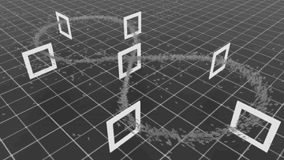
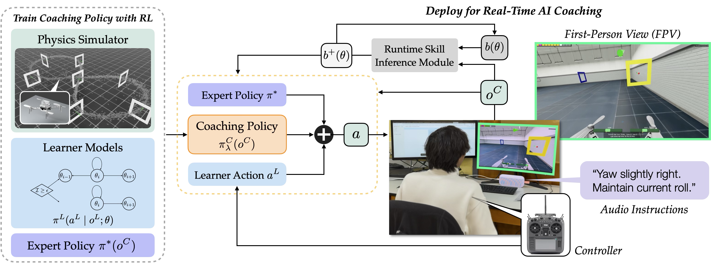
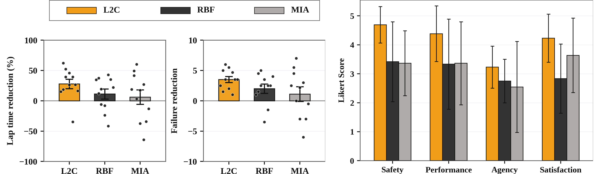
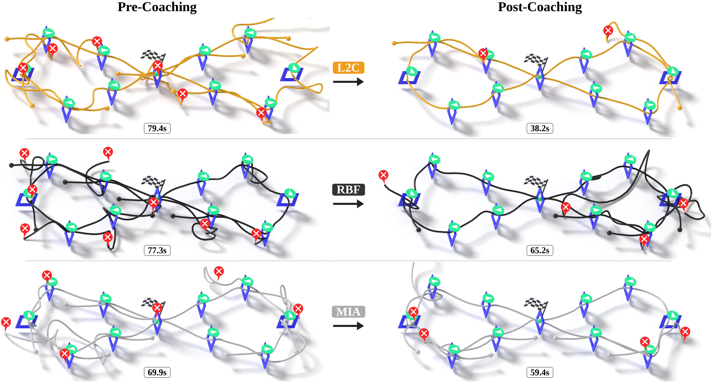
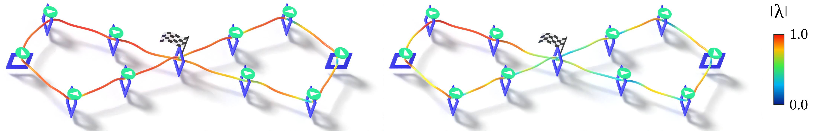
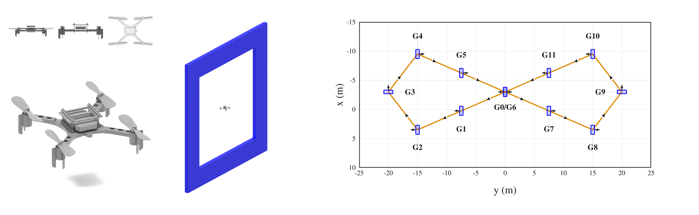

Publication and resources
Conference on Robot Learning (CoRL), 2026 — accepted.
Paper · Preprint · Project website · Video
Overview
Abstract: AI copilots can substantially boost human performance through shared control, but excessive assistance can induce over-reliance and skill atrophy. We study how an embodied AI agent can act as a coach that accelerates human motor-skill development. Effective coaching requires strategic scaffolding and stepping back aligned with the learner’s capability, allowing productive failures that drive learning. We formalize AI coaching as a dynamic game in which the learner optimizes task performance while the coach targets independent competence. Building on this formalism, we develop a reinforcement learning framework that combines adaptive shared control with probabilistic models of skill evolution, enabling tractable training of coaching policies.

Parallel training rollouts of a single quadrotor racing through gates in Isaac Lab. Multiple drones appear because environments are vectorized for faster policy learning, not because of multi-agent interaction.
Overview Video
This presentation gives a high-level walkthrough of the paper: motivation, formulation, method, and user-study results.
Formulation and Method
To train a coaching policy, we augment the robot’s transition dynamics with two learner-side components: a skill-conditioned control policy, and a model of how the learner’s latent skill evolves in response to coaching events such as successful or failed task attempts.
At deployment, the coach maintains a belief over learner skill and uses the learned blending policy to combine the learner command with the expert action, allowing the system to scaffold or step back according to the learner and task context.

Overview of L2C: simulation-time coach training, adaptive action blending, and live coaching with skill belief.
Experimental Results
We conducted a user study with N = 33 participants from diverse drone-flying backgrounds in a high-fidelity FPV drone racing simulator. Each participant was randomly assigned to one of three AI coaches: L2C and two baselines, RBF and MIA. We measure human skill change with two metrics: lap time and failure count.
For L2C, a paired-samples t-test comparing pre- and post-coaching lap times yielded a mean reduction of 27.9% with p = 0.005 and Cohen’s d_z = −1.08. Similarly, a paired t-test on per-lap failure count yielded a mean reduction of 3.52 failures per lap with p < 0.001 and Cohen’s d_z = −2.13.
For RBF, paired tests showed no reliable change in lap time, but the paired test on failure count showed significance. For MIA, paired tests showed no reliable change in lap time or failure count. All four between-method contrasts favor L2C with medium-to-large effect sizes.

After coaching, learners trained with L2C show significant reductions in lap time and failure count and report higher safety, performance, agency, and satisfaction than both baselines.
Pre- and Post-Coaching Trajectories
The objective metrics show that L2C achieves larger reductions in lap time and failure count than both baselines. This figure provides qualitative examples of how human trajectories change after coaching, complementing aggregate metrics by showing the spatial structure of the laps.

Example pre- and post-coaching evaluation trajectories for the three coaching methods. Rows correspond to coaching methods; columns compare pre- and post-coaching evaluation laps.
Assistance Adaptation
We inspect how L2C changes assistance based on the estimated learner skill and physical context. The magnitude of the blending vector along example trajectories shows two emerging forms of adaptation: across learners, a novice receives more assistance than a more skilled learner; within each trajectory, ∣λ∣ varies sharply around the gates, the task-critical states that determine whether the learner collides or passes successfully.

L2C assistance coefficient ∣λ∣ visualized on example racing trajectories. Left: estimated skill θ̂ = 0; right: estimated skill θ̂ = 0.5.
Simulation Environment
We structure each trial into three phases: a pre- and post-coaching test, and a main coached training session. To prevent participant fatigue, we limit the training session to 15 laps and restrict the human’s control authority to yaw and roll rate while automating the pitch rate and thrust.
The simulated racing environment consists of 12 gates in a figure-eight layout, with two gates spatially overlapping at the central crossing. Participants are instructed to fly through the gates in the prescribed order, completing the course as quickly as possible.

Drone-racing simulation assets: quadrotor model visualization, true-scale gate-quadrotor comparison, and top-down track map showing gate order, positions, headings, and traversal direction.
Contributors
Wei Wang, Enlin Gu, Antonio Loquercio, Rahul Mangharam, and Haimin Hu